1과목: 수질오염개론
1. 하수가 유입된 하천의 자정작용을 하천 유하거리에 따라 분해지대, 활발한 분해지대, 회복지대, 정수지대의 4단계로 분류하여 나타내는 경우, 회복지대의 특성으로 틀린 것은?
2. 강우의 pH의 관한 설명으로 틀린 것은?
3. 호소의 부영양화에 대한 일반적 영향으로 틀린 것은?
4. 수질오염물질 중 중금속에 관한 설명으로 틀린 것은?
5. 광합성에 대한 설명으로 틀린 것은?
6. 물의 특성에 대한 설명으로 옳지 않은 것은?
7. 생물농축에 대한 설명으로 가장 거리가 먼 것은?
8. 벤젠, 톨루엔, 에틸벤젠, 자일렌이 같은 몰수로 혼합된 용액이 라울트 법칙을 따른다고 가정하면 혼합액의 총 증기압(25℃기준, atm)은? (단, 벤젠, 톨루엔, 에틸벤젠,, 자일렌의 25℃에서 순수액체의 증기압은 각각 0.126. 0.038, 0.0126, 0.01177 atm이며, 기타 조건은 고려하지 않음)
9. BOD5가 270mg/L이고, COD가 450mg/L인 경우, 탈산소계수(K1)의 값이 0.1/day일 때, 생물학적으로 분해 불가능한 COD(mg/L)는? (단, BDCOD = BODu, 상용대수 기준)
10. 다음은 수질조사에서 얻은 결과인데, Ca2+ 결과치의 분실로 인하여 기재가 되지 않았다. 주어진 자료로부터 Ca2+ 농도(mg/L)는?
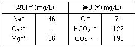
11. 부영양화가 진행된 호소에 대한 수면관리 대책으로 틀린 것은?
12. 생물학적 질화 중 아질산화에 관한 설명으로 틀린 것은?
13. 0.01 M-KBr과 0.02 M-ZnSO4 용액의 이온강도는? (단, 완전 해리 기준)
14. 바닷물에 0.⑤4M의 MgCl2가 포함되어 있을 때 바닷물 250mL에 포함되어 있는 MgCl2의 양(g)은? (단, 원자량 Mg = 24.3, Cl = 35.5)
15. 반응속도에 관한 설명으로 알맞지 않은 것은?
16. 방사성 물질인 스트론튬(Sr90)의 반감기가 29년이라면 주어진 양의 스트론튬(Sr90)이 99% 감소하는데 걸리는 시간(년)은?
17. 수질모델링을 위한 절차에 해당하는 항목으로 가장 거리가 먼 것은?
18. 다음과 같은 수질을 가진 농업용수의 SAR값은? (단, Na+ = 460mg/L, PO43- = 1500mg/L, Cl- = 108mg/L, Ca2+ = 600mg/L, Mg2+ = 240mg/L, NH3-N = 380mg/L, 원자량 = Na : 23, P : 31, Cl : 35.5, Ca : 40, Mg : 24)
19. 다음의 기체 법칙 중 옳은 것은?
20. 시료의 BOD5가 200mg/L이고 탈산소계수값이 0.15day-1일 때 최종 BOD(mg/L)는?
2과목: 상하수도계획
21. 계획 오수량에 관한 설명으로 ()에 알맞은 내용은?
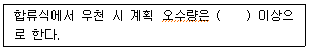
22. 하수 배제방식의 특징에 대한 설명으로 옳지 않은 것은?
23. 정수처리방법인 중간염소처리에서 염소의 주입 지점으로 가장 적절한 것은?
24. 계획취수량을 확보하기 위하여 필요한 저수용량의 결정에 사용되는 계획기준년에 관한 내용으로 ()에 적절한 것은?
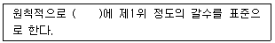
25. 하수관로에 관한 설명 중 옳지 않은 것은?
26. 기존의 하수처리시설에 고도처리시설을 설치하고자 할 때 검토사항으로 틀린 것은?
27. 해수담수화방식 중 상(相)변화방식인 증발법에 해당되는 것은?
28. 1분당 300m3의 물을 150m 양정(전양정)할 때 최고효율점에 달하는 펌프가 있다. 이 때의 회전수가 1500rpm이라면, 이 펌프의 비속도(비교회전도)는?
29. 펌프의 토출량이 0.20m3/sec, 흡입구 유속이 3m/sec인 경우, 펌프의 흡입구경(mm)은?
30. 막모듈의 열화와 가장 거리가 먼 것은?
31. 상수도 계획급수량과 관련된 내용으로 잘못된 것은?
32. 오수 이송방법은 자연유하식, 압력식, 진공식이 있다. 이중 압력식(다중압송)에 관한 내용으로 옳지 않은 것은?
33. 도수거에 관한 설명으로 옳지 않은 것은?
34. 하수처리를 위한 산화구법에 관한 설명으로 틀린 것은?
35. 취수시설에서 침사지에 관한 설명으로 옳지 않은 것은?
36. 상수의 공급과정을 바르게 나타낸 것은?
37. 계획취수량이 10m3/sec, 유입수심이 5m, 유입속도가 0.4m/sec인 지역에 취수구를 설치하고자 할 때 취수구의 폭(m)은? (단, 취수보 설계 기준)
38. 정수시설 중 폴록형성지에 관한 설명으로 틀린 것은?
39. 오수관거 계획 시 기준이 되는 오수량은?
40. 천정호(얕은우물)의 경우 양수량
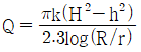
로 표시된다. 반경 0.5m의 천정호 시험정에서 H = 6m, h = 4m, R = 50m인 경우에 Q = 0.6m3/sec의 양수량을 얻었다. 이 조건에서 투수계수(Rm/sec)는?3과목: 수질오염방지기술
41. 탈질소 공정에서 폐수에 탄소원 공급용으로 가해지는 약품은?
42. MLSS의 농도가 1500mg/L인 슬러지를 부상법으로 농축시키고자 한다. 압축탱크의 유효전달 압력이 4기압이며 공기의 밀도가 1.3g/L, 공기의 용해량이 18.7mL/L일 때 A/S비는? (단, 유량 = 300m3/day, f = 0.5, 처리수의 반송은 없다.)
43. 포기조 내의 혼합액의 SVI가 100이고, MLSS농도를 2200mg/L로 유지하려면 적정한 슬러지의 반송률(%)은? (단, 유입수의 SS는 무시한다.)
44. 기계적으로 청소가 되는 바 스크린의 바(bar)두께는 5mm이고 바 간의 거리는 30mm이다. 바를 통과하는 유속이 0.90m/sec일 때 스크린을 통과하는 수두손실(m)은? 단,
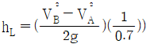
)45. 경사판 침전지에서 경사판의 효과가 아닌 것은?
46. 분뇨의 생물학적 처리공법으로서 호기성 미생물이 아닌 혐기성 미생물을 이용한 혐기성처리공법을 주로 사용하는 근본적인 이유는?
47. 크롬함유 폐수를 환원처리공법 중 수산화물 침전법으로 처리하고자 할 때 침전을 위한 적정 pH 범위는? (단, Cr3 + 3OH- → Cr(OH)3↓)
48. Side Steram을 적용하여 생물학적 방법과 화학적 방법으로 인을 제거하는 공정은?
49. 이온교환막 전기투석법에 관한 설명 중 옳지 않은 것은?
50. 분리막을 이용한 수처리 방법 중 추진력이 정수압차가 아닌 것은?
51. 폐수처리에 관련된 침전현상으로 입자간에 작용하는 힘에 의해 주변입자들의 침전을 방해하는 중간정도 농도 부유액에서의 침전은?
52. 생물학적 우너리를 이용하여 질소, 인을 제거하는 공정인 5단계 Bardenpho 공법에 관한 설명으로 옳지 않은 것은?
53. 회전원판법(RBC)의 장점으로 가장 거리가 먼 것은?
54. 상향류 혐기성 슬러지상의 장점이라 볼 수 없는 것은?
55. 하수 고도처리 공법인 Phostrip 공정에 관한 설명으로 옳지 않은 것은?
56. 생물학적 처리법 가운데 살수여상법에 대한 설명으로 가장 거리가 먼 것은?
57. 평균 유입하수량 10000m3/day인 도시하수처리장의 1차침전지를 설계하고자 한다. 1차침전지의 표면부하율을 50m3m2ㆍday로 하여 원형침전지를 설계한다면 침전지의 직경(m)은?
58. 수온 20℃일 때, pH6.0이면 응결에 효과적이다. pOH를 일정하게 유지하는 경우, 5℃일 때의 pH는? (단, 20℃일 때 Kw = 0.68×10-14)
59. 2차 처리 유출수에 포함된 25m/L의 유기물을 분말 활성탄 흡착법으로 3차 처리하여 2mg/L될 때 까지 제거하고자 할 때 폐수 3m3당 필요한 활성탄의 양(g)은? (단, Freundlich 등온식 활용, k=0.5, n=1)
60. 수온 20℃에서 평균직경 1mm인 모래입자의 침전속도(m/sec)는? (단, 동점성값은 1.003×10-6m2/sec, 모래비중은 2.5 Stoke's법칙 이용)
4과목: 수질오염공정시험기준
61. 시료의 보존방법으로 틀린 것은?
62. 원자흡수분광광도법에서 일어나는 간섭에 대한 설명으로 틀린 것은?
63. 공장의 폐수 100mL를 취하여 산성 100℃에서 KMnO4에 의한 화학적산소소비량을 측정하였다. 시료의 적정에 소비된 0.025N KMnO4의 양이 7.5mL였다면 이 폐수의 COD(mg/L)는? (단, 0.025N KMnO4 factor = 1.02, 바탕시험 적정에 소비된 0.025 N KMnO4 = 1.00mL)
64. 35% HCI(비중 1.19)을 10% HCI으로 만들기 위한 35% HCI과 물의 용량비는?
65. 분원성 대장균군-막여과법에서 배양온도 유지 기준은?
66. ppm을 설명한 것으로 틀린 것은?
67. 유도결합플라스마-원자발광분광법에 의한 원소별 정량한계로 틀린 것은?
68. 수질오염공정시험기준상 이온크로마토그래피법을 정량분석에 이용할 수 없는 항목은?
69. 자외선/가시선 분광법을 적용한 음이온계면활성제 측정에 관한 설명으로 틀린 것은?
70. 적절한 보존방법을 적용한 경우 시료 최대보존기간이 가장 긴 항목은?
71. 용존산소(DO)측정 시 시료가 착색, 현탁된 경우에 사용하는 전처리시약은?
72. 수질오염공정시험기준상 총대장균군의 시험방법이 아닌 것은?
73. 노말헥산추출물질 측정을 위한 시험방법에 관한 설명으로 ()에 옳은 것은?
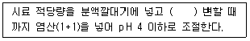
74. 전기전도도 특정에 관한 설명으로 틀린 것은?
75. 크롬-원자흡수분광광도법의 정량한계에 관한 내용으로 ()에 옳은 것은?
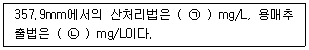
76. 온도에 관한 내용으로 옳지 않은 것은?
77. ‘항량으로 될 때까지 건조한다’는 정의 중 ()에 해당하는 것은?
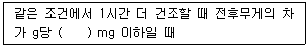
78. 냄새역치(TON)의 계산식으로 옳은 것은? (단, A : 시료부피(mL), B : 무취 정제수 부피(mL))
79. 취급 또는 저장하는 동안에 기체 또는 미생물이 침입하지 아니하도록 내용물을 보호하는 용기는?
80. 공장폐수 및 하수유량-관(pipe)내의 유량측정 방법 중 오리피스에 관한 설명으로 옳지 않은 것은?
5과목: 수질환경관계법규
81. 물놀이 등의 행위제한 권고기준 중 대상행위가 ‘어패류 등 섭취’인 경우인 것은?
82. 기본배출부과금 산정에 필요한 지역별 부과계수로 옳은 것은?
83. 사업장별 환경기술인의 자격기준에 관한 설명으로 옳지 않은 것은?
84. 폐수수탁처리업에서 사용하는 폐수운반차량에 관한 설명으로 틀린 것은?
85. 기술인력 등의 교육에 관한 설명으로 ()에 들어갈 기간은?
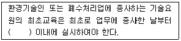
86. 조치명령 또는 개선명령을 받지 아니한 사업자가 배출허용기준을 초과하여 오염물질을 배출하게 될 때 환경부장관에게 제출하는 개선계획서에 기재할 사항이 아닌 것은?
87. 환경부장관이 배출시설을 설치ㆍ운영하는 사업자에 대하여(조업정지를 하는 경우로써) 조업정지처분에 갈음하여 과징금을 부과할 수 있는 대상 배출시설이 아닌 것은?
88. 수질오염감시경보 단계 중 경계단계의 발령기준으로 ()에 내용으로 옳은 것은?
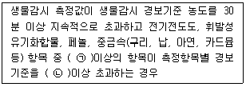
89. 낚시제한구역에서의 제한사항이 아닌 것은?
90. 폐수처리업에 종사하는 기술요원에 대한 교육기관으로 옳은 것은?
91. 공공수역에 정당한 사유없이 특정수질유해물질 등을 누출ㆍ유출시키거나 버린 자에 대한 처벌기준은?
92. 대권역 물환경관리계획의 수립 시 포함되어야 할 사항으로 틀린 것은?
93. 초과부과금 산정기준으로 적용되는 수질오염 물질 1킬로그램당 부과금액이 가장 높은(많은) 것은?
94. 수계영향권별 물환경 보전에 관한 설명으로 옳은 것은?
95. 물환경보전법에 사용하는 용어의 뜻으로 틀린 것은?
96. 수질오염방지시설 중 물리적 처리시설에 해당되지 않는 것은?
97. 일일기준초과 배출량 산정 시 적용되는 일일유량의 산정 방법은 [측정유량×일일조업시간]이다. 측정유량의 단위는?
98. 하천(생활환경기준)의 등급별 수질 및 수생태계의 상태에 대한 설명으로 다음에 해당되는 등급은?
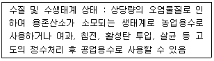
99. 공공수역의 전국적인 수질 현황을 파악하기 위해 설치할 수 있는 측정망의 종류로 틀린 것은?
100. 위임업무 보고사항 중 업무내용에 따른 보고횟수가 연 1회에 해당되는 것은?